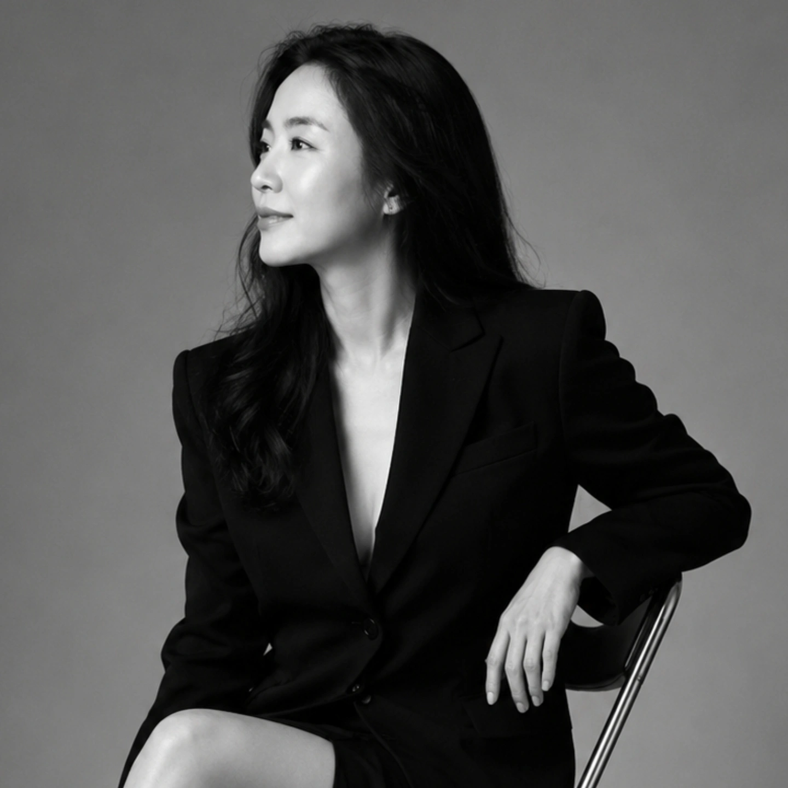

색으로 보는 나와 우리 가족 — CPA 색채심리 이야기
12색 기질로 풀어보는 ‘나는 어떤 사람인가’. 가족 · 이웃과의 관계를 색으로 이해하는 시간.
브레인 · 마인드 · 웰니스 통합코치
뇌과학 · 색채심리 · 아로마를 하나로 엮어, 흔들리지 않는 마음을 설계합니다.
세 아이를 키운 ‘코치엄마’의 시선으로, 일상에서 누구나 쓸 수 있는 마음 돌봄의 언어를 전합니다.

About
훈육은 감정 싸움이 되기 쉽습니다. 하지만 행동 뒤에는 타고난 기질과, 지금 이 순간의 뇌 상태가 있습니다. 저는 그 둘을 각각 다른 눈으로 읽고, 겹쳐 보는 일을 합니다. 감이 아니라 근거로요.
12색 기질로 ‘나는 어떤 사람인가’를 풀어냅니다. 평소의 성향을 데이터로 확인하고, 그 사람만의 사용설명서를 만듭니다.
뇌파는 ‘지금 이 순간의 상태’를 보여줍니다. 집중력과 긴장 조절의 원리를 일상에 적용하는 자기조절 습관으로 옮깁니다.
스트레스와 불안을 다스리는 향의 과학. 누구나 오늘 저녁부터 따라 할 수 있는 생활 속 정서 케어로 이어집니다.
Philosophy
“선수이기 이전에,
한 사람으로 성장하도록 돕는다”
장기적 발달 모델(LTAD)과 자기결정성 이론(SDT), 빙산 모델에 기반해 통제가 아닌 자율성과 정서를 지지합니다. 성적과 결과보다 ‘사람의 성장’을 먼저 바라보는 코칭을 지향합니다.
Lecture
지자체 시민강좌, 학부모 교육, 기업 · 기관 워크숍 형태로 진행합니다. 강의와 향기 공예를 함께하는 체험형 구성도 가능합니다.
12색 기질로 풀어보는 ‘나는 어떤 사람인가’. 가족 · 이웃과의 관계를 색으로 이해하는 시간.
스트레스 · 불안을 다스리는 향기의 과학. 누구나 따라 할 수 있는 생활 속 아로마 활용법.
집중력과 긴장 조절의 원리를 쉽게 풀어내는 뇌과학 입문. 일상에 적용하는 자기조절 습관.
‘무가치함의 심리학’을 바탕으로 한 자존감 회복 강의. 강의와 향기 공예를 함께하는 체험형 구성 가능.
통제가 아닌 자율과 정서를 지지하는 소통법. 양육에 지친 부모를 위한 회복의 메시지.
Credentials
색채심리 · 스포츠 멘탈 · 뇌과학 · 아로마 네 갈래를 각각 정식 과정으로 밟아, 하나의 통합 리포트로 엮습니다.
Work
유소년 선수와 학부모를 대상으로 멘탈 코칭과 통합 프로그램을 기획 · 운영합니다.
뇌파 데이터와 CPA 컬러 DNA, 아로마 처방을 한 장으로 엮는 웹 리포트를 직접 만들었습니다. ‘지금 상태 × 평소 성향’을 대조해 읽습니다.
자존감 회복을 주제로 한 워크숍. 향기팔찌 · 세라믹가든 공예를 연계한 체험형 구성으로 진행합니다.
여성노동복지센터, 백화점 문화센터 등에서 부모교육과 시민강좌 프로그램을 기획하고 운영합니다.
스포츠 멘탈 · 양육 · 뇌과학을 주제로 정기 콘텐츠를 씁니다.
Threads와 인스타그램에서 기질육아 이야기를 매일 나눕니다. 어려운 개념을 짧은 그림으로 옮깁니다.
Story
다른 언어로 사람을 이해하는 법을 처음 배웠습니다.
Jewelry Design & Product 전공. 귀금속제작기능사 · 주얼리코디네이터 · 컬러코디네이터 자격 취득. 색을 다루는 눈이 여기서 만들어졌습니다.
CPA 컬러기질전문상담사, 스포츠심리상담사, 아로마 전문 자격을 취득하며 코칭을 본업으로 삼았습니다.
뇌전문가 · 브레인PD · NAHA 과정을 마치고 네 갈래를 통합했습니다. 지금은 NeuroCPA 리포트와 시민강좌로 그 결과를 나눕니다.
기질리포트, 시민강좌, 학부모 교육, 선수 멘탈 코칭 — 무엇이든 먼저 이야기부터 나눠보면 좋겠습니다.